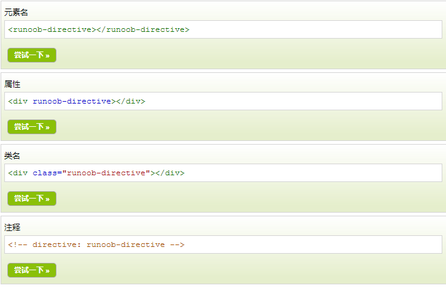

分享人：徐浩程
目录
1.背景介绍
2.知识剖析
3.常见问题
4.解决方案
5.编码实战
6.扩展思考
7.参考文献
8.更多讨论
AngularJS 指令是扩展的 HTML 属性，带有前缀 ng-。
AngularJS 通过内置的指令来为应用添加功能。
AngularJS 允许你自定义指令。
1.ng-app 指令初始化一个 AngularJS 应用程序。
2.ng-init 指令初始化应用程序数据。
3.ng-model 指令把元素值（比如输入域的值）绑定到应用程序。
4.ng-repeat 指令会重复一个 HTML 元素
5.你可以使用 .directive 函数来添加自定义的指令。
3.常见问题
如果创建自定义指令
4.解决方案
restrict值
A作为属性使用 C作为类名使用
M作为注释使用 E作为元素名使用
template参数:两种形式
HTML文本形式
函数形式
js部分：
angular.module('app',[])
.directive('myDirective', function () {
return {
restrict: 'E',
template: function (elem, attr) {
return "" + attr.text + "";
}
};
})
html部分:
templateUrl参数
文本形式
angular.module('app',[])
.directive('myDirective', function () {
return {
restrict: 'AEC',
templateUrl: 'js/directives/searchParams/search-params.html',
};
})
函数形式
angular.module('app',[])
.directive('myDirective', function () {
return {
restrict: 'AEC',
templateUrl: function (elem, attr) {
return attr.value + ".html"; //当然这里我们可以直接指定路径，同时在模板中可以包含表达式
}
};
})
scope参数
scope参数是可选的，可以被设置为true或一个对象。默认值是false。
当为true时：继承并隔离，父子作用域互相影响
当为false时：继承但是不隔离，也就是说子作用域改变并不会影响父作用域
当为{}时：隔离且不继承
controller参数
controller参数可以是一个字符串或一个函数。当设置为字符串时，会以字符串的值为名字，来查找注册在应用中的控制器的构造函数.
angular.module('myApp', [])
.directive('myDirective', function() {
restrict: 'A',
controller: 'SomeController'
})
可以在指令内部通过匿名构造函数的方式来定义一个内联的控制器
angular.module('myApp',[])
.directive('myDirective', function() {
restrict: 'A',
controller:
function($scope, $element, $attrs, $transclude) {
// 控制器逻辑放在这里
}
});
5.编码实战
6.扩展思考
自定义指令有什么缺陷？
7.参考文献
8.更多讨论
自己尝试做一个自定义省市联动指令
感谢大家观看
BY : 徐浩程